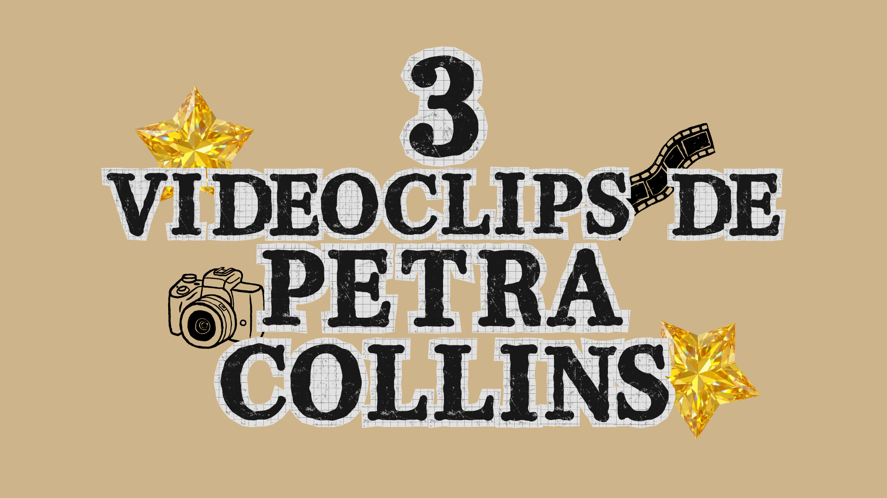
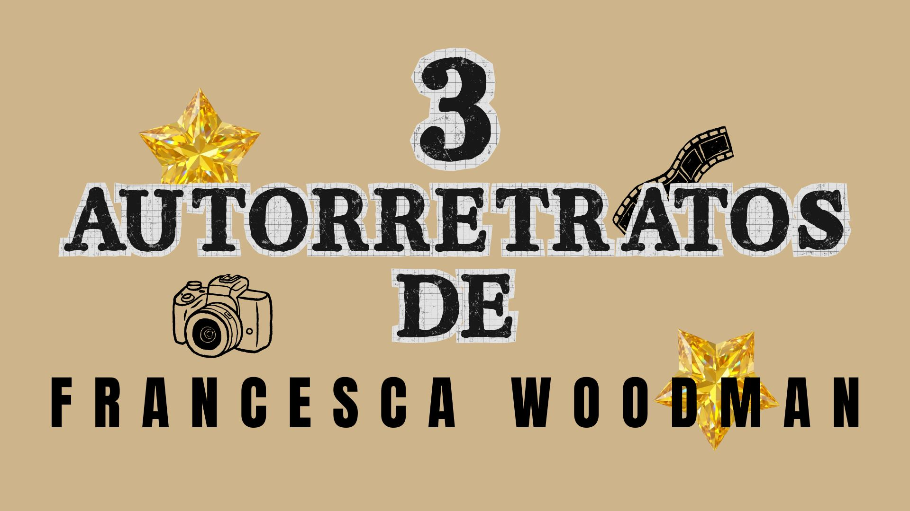

La fotografía es otro puente hacia los sentimientos y pensamientos que habitan en lo más profundo del ser. Un arte que atravesó todas las épocas y continúa transformándose, demostrando que siempre puede reinventarse y superarse a sí mismo. Porque fotografiar no es solamente observar: también es interpretar. Es capturar un instante y conservarlo para que pueda ser contemplado una y otra vez a través del tiempo. Por todas estas razones, MOKA crea este espacio para que descubras fotógrafos, obras y miradas diferentes que revelan la inmensa diversidad de este arte.
Algunas de las recomendaciones que forman parte del universo fotográfico de Moka.

Tres videoclips de Petra Collins que demuestran la versatilidad y capacidad de adaptación que tiene Petra a pesar de su estilo marcado.
Leer artículo →
Woodman se caracteriza por un estilo muy particular en blanco y negro y excesivamente expresiva. Por eso, hicimos un pequeño compilado de cinco autorretratos que muestran su esencia.
Leer artículo →Nuevas muestras, exposiciones y reconocimientos pronto en esta sección.